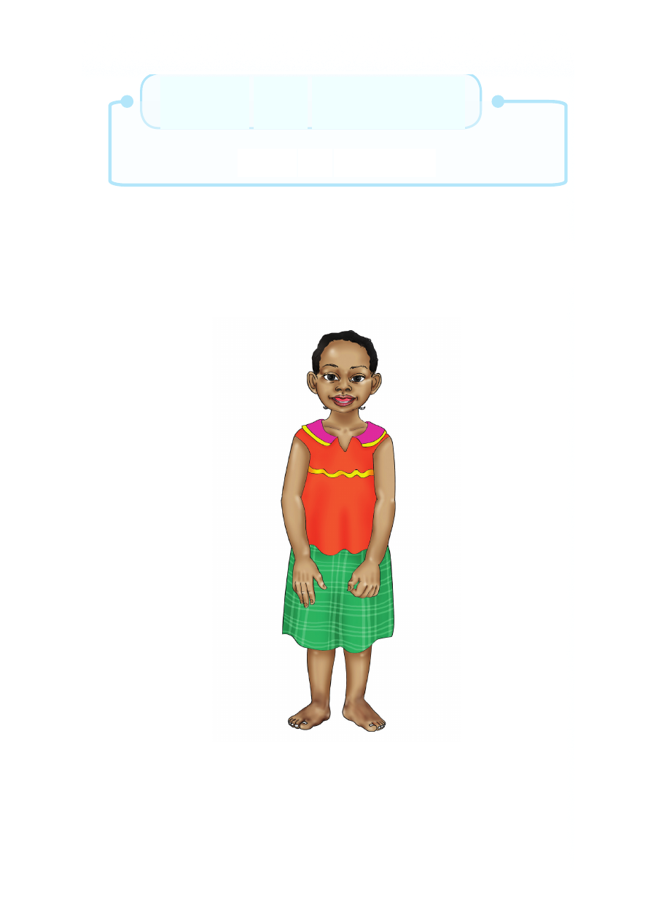

Sura ya Kwanza
Mwili wa binadamu
Utangulizi
Katika sura hii utajifunza kuhusu mwili wa binadamu.Utabaini
sehemu za nje za mwili wa binadamu. Vilevile utaelezea kazi
za sehemu za nje za mwili wa binadamu.
Sura ya Kwanza Mwili wa binadamu Utangulizi Katika sura hii utajifunza kuhusu mwili wa binadamu.Utabaini sehemu za nje za mwili wa binadamu. Vilevile utaelezea kazi za sehemu za nje za mwili wa binadamu.